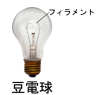
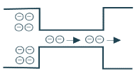
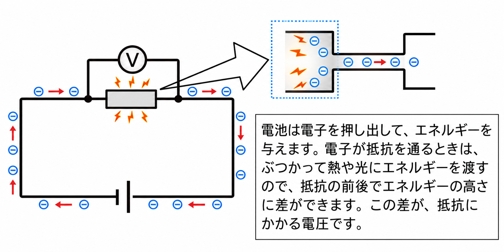
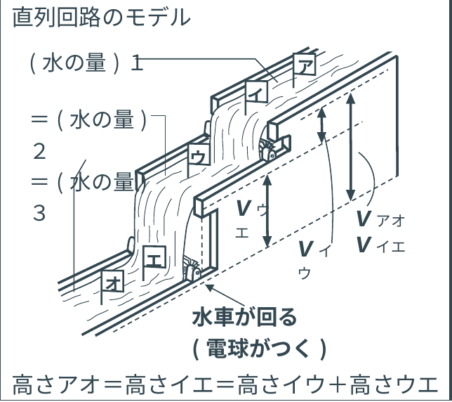
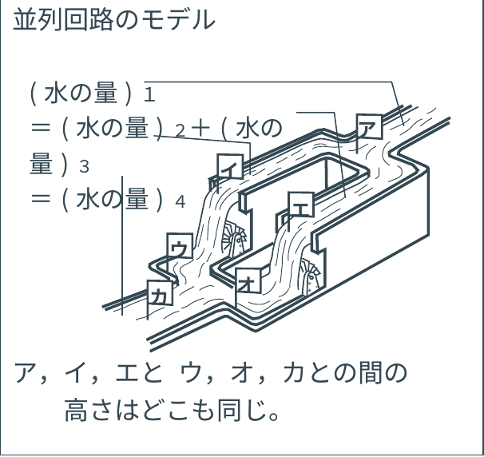

1電流の性質
📖 説明
直列回路を流れる電流は、どの点でも等しくなります。
直列回路 I1＝I2＝I3
並列回路では、分かれたあとの電流の和が、分かれる前の電流や、合流したあとの電流に等しくなります。
並列回路 I1＝I2＋I3＝I4
電流は、電池の＋極から−極に向かって流れると決められています。ところが、電流のもとである電子は−の電気(電荷)をもっているので、反対に−極から＋極へ移動します。電池が発明された1800年ごろは、電流のもとが電子の流れだとはわかっていませんでした。
★ 覚えよう!
- 直列回路……電流はどの点でも等しい (I1＝I2＝I3)
- 並列回路……分かれたあとの電流の和＝分かれる前＝合流したあとの電流 (I1＝I2＋I3＝I4)
- 電流は＋極→−極の向き。電子は−極→＋極の向きに動く
📚 語群 ― タップして選び、説明文の空欄をタップ!
✏️ ミニテスト(全4問)
問1直列回路では、電流の大きさは、場所によってちがう。
× 直列回路を流れる電流は、どの点でも等しくなります。
問2並列回路で、分かれる前の電流が300mA、一方の道すじに120mA流れている。もう一方の道すじには何mA流れるか。
正解はウ。分かれた電流の和が、分かれる前の電流に等しいので、300－120＝180mAです。
問3電子が動く向きは、どれか。
正解はア。電子は−の電気をもっているので、−極から＋極へ移動します。(電流の向きは＋→−と決められています)
問4並列回路で、合流したあとの電流は、分かれる前の電流と等しい。
○ 正解です。分かれた電流が合流するので、分かれる前の電流と同じ大きさにもどります。
🏆 ベストタイム
2電圧の性質
📖 説明
直列回路では、それぞれの電気器具にかかる電圧の和が、電源の電圧に等しくなります。
並列回路では、それぞれの電気器具にかかる電圧はみな同じで、電源の電圧に等しくなります。
直列回路 E3＝E1＋E2
並列回路 E1＝E2＝E3
💡 どうして、抵抗に電流が流れると電圧が生じるの?
(作者の理解しやすいようにした説明です。ご了承ください。) 豆電球のフィラメントは細いため電子が流れにくく、その摩擦(まさつ)により熱と光を発します。
電池は電子を押し出して、エネルギーを与えます。電子が抵抗を通るときは、ぶつかって熱や光にエネルギーを渡すので、抵抗の前後でエネルギーの高さに差ができます。この差が、抵抗にかかる電圧です。

豆電球のフィラメント

細い所では電子が流れにくい

抵抗に電流が流れるとき(電子の動きのイメージ)
下の水の流れのモデル図で、水の「高さ」を電圧にたとえると、わかりやすくなります。直列回路では、水車(電球)が2つ続くと、高さの差を分けあいます。並列回路では、水が分かれても、高さの差はどこも同じです。

直列回路のモデル(水車が2つ続く)

並列回路のモデル(水が分かれる)
★ 覚えよう!
- 直列回路……各器具の電圧の和＝電源の電圧
- 並列回路……各器具にかかる電圧はみな同じ(＝電源の電圧)
- 水流のモデル……水の高さの差＝電圧。直列は分けあい、並列はどこも同じ
📚 語群 ― タップして選び、説明文の空欄をタップ!
✏️ ミニテスト(全4問)
問1直列回路で、電源の電圧が6V、豆電球Aにかかる電圧が2Vである。豆電球Bにかかる電圧は何Vか。
正解はエ。直列回路では電圧の和が電源の電圧に等しいので、6－2＝4Vです。
問2並列回路で、電源の電圧が6Vである。豆電球Aにかかる電圧は何Vか。
正解はイ。並列回路では、各電気器具に電源の電圧と同じ電圧がかかります。
問3直列回路では、各電気器具にかかる電圧は、すべて電源の電圧と同じである。
× 直列回路では電圧を分けあうので、各器具の電圧の和が電源の電圧に等しくなります。
問4並列回路では、各電気器具にかかる電圧は、みな同じである。
○ 正解です。並列回路では、どの道すじにも電源と同じ電圧がかかります。